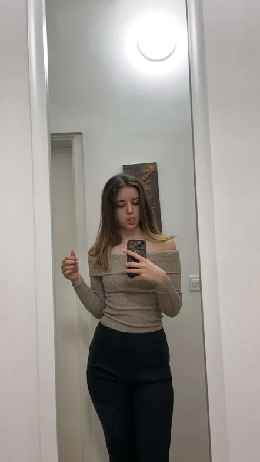
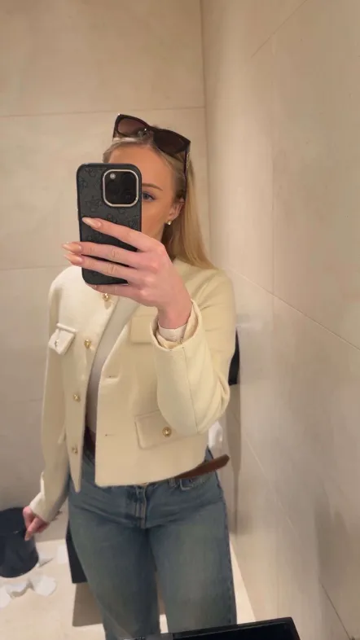

Sva Marija in Eva, dijakinji 2. letnika Gimnazije Slovenske Konjice. Povezuje naju dolgoletno prijateljstvo, zaupanje in predvsem iskrena želja po tem, da bi naredili svet malo boljši. Ideja za MarEva se je rodila med odmori in dolgimi pogovori o tem, kako pogosto ljudje ostajajo sami s svojimi mislimi. Tako sva se odločili, da narediva nekaj preprostega, a pomembnega – prostor za pogovor.
MarEva ni projekt, kjer bi želeli izstopati ali tekmovati. Želiva si le, da bi bil nekdo tam za druge – kot midve ena za drugo. Spletna stran omogoča vsakomur, da na drugi strani sliši človeški glas, brez strahu pred obsojanjem. Pogosto je pogovor tisto, kar zmanjka v današnjem svetu – zato ga želiva vrniti. Prisluhniti. Razumeti. Biti tam.
Vse, kar počneva, je prostovoljno in iz srca. Verjameva, da lahko tudi najina mladost nekaj spremeni, če le ponudiva čas in odprta ušesa. Najina vrata so odprta vsakomur, ki potrebuje pogovor, nasvet ali samo tišino v družbi.